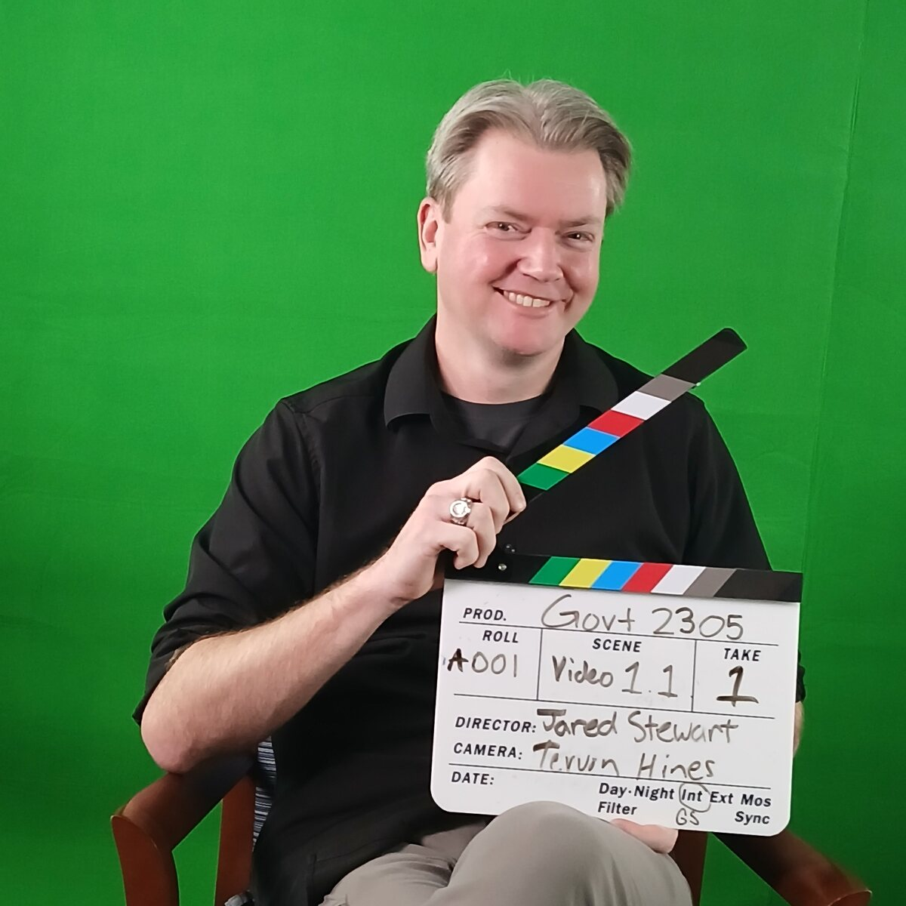
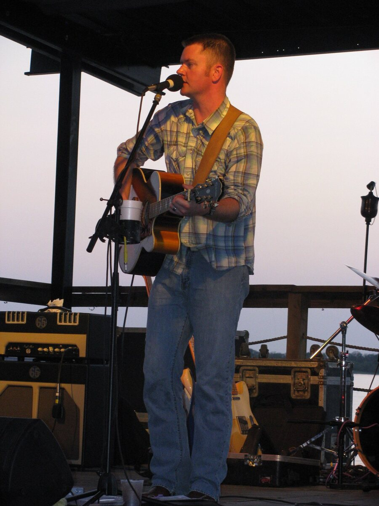
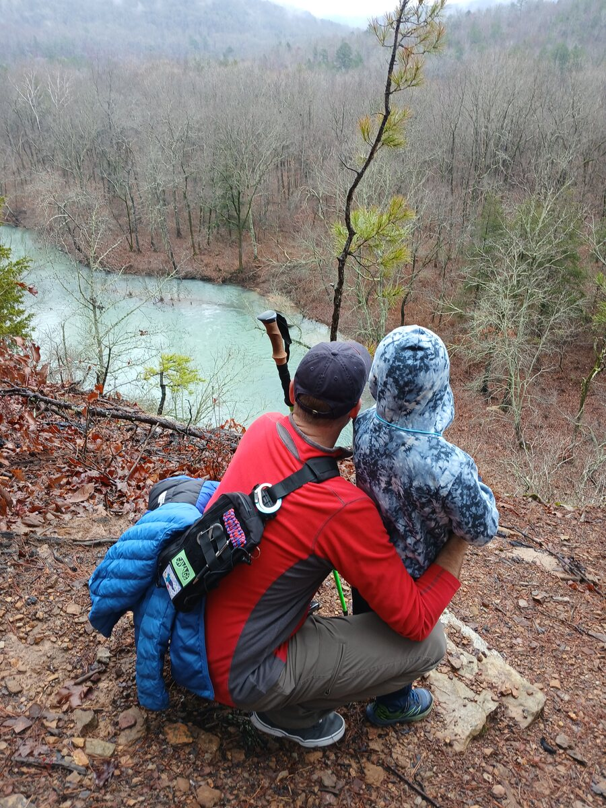
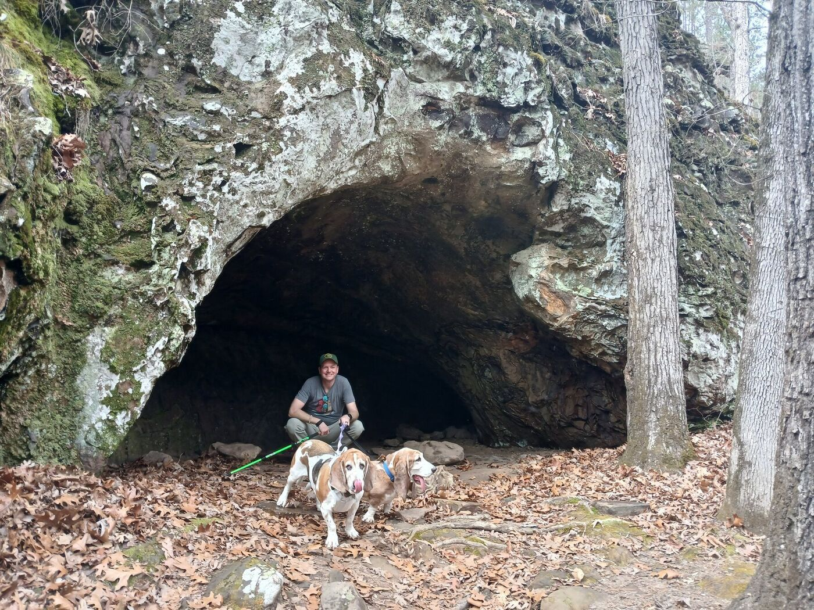
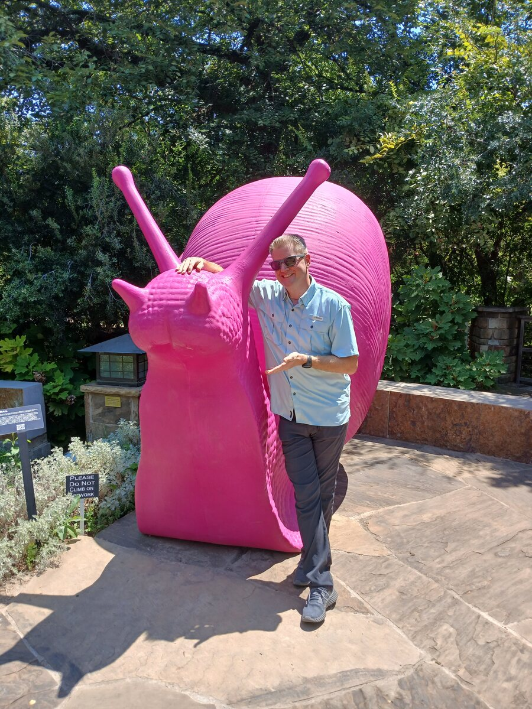

Why I do this
My students are working adults, parents, veterans, and first-generation college students. Government already shapes their lives every single day — they deserve a course that treats them like citizens, not test-takers.

On set, filming GOVT 2305 · Take 1
I teach GOVT 2305 and 2306 — Federal and Texas Government — in Fort Worth, where I grew tired of watching capable, busy people disengage from courses built on memorization and Scantrons. So I started replacing exams with real civic action: attending public meetings, contacting representatives, mapping public services, showing up.
Everything I build is shared as a free, open educational resource. If you're an instructor, take it, adapt it, and make it yours. If you're a student, these tools were built for you first.
The CV, abridged
A decade of designing and teaching political science courses — from university seminar rooms to dual-credit high school classrooms — with a few department chair hats along the way.
Education
Teaching & Leadership
Projects I'm proud of
Every one of these opens free in any browser. No logins, no installs, no cost — just click and start.
The Civic Action Project (CAP)
My signature framework — and the subject of my doctoral research. CAP replaces traditional government exams with a menu of 39 hands-on civic engagement activities, from attending city council meetings to building public service directories. Includes complete instructor resources, rubrics, tracking tools, and student outcome data.
Texas In Action (TIA)
The Lone Star counterpart to CAP — civic engagement built specifically for Texas Government (GOVT 2306). Students connect directly with the state and local institutions that shape daily life in Texas, from the Capitol in Austin to their own county courthouse.
Federal Government Trailblazer Trek
Sixteen gamified, interactive learning modules covering all of American federal government. Students earn points, unlock reveal cards, pass knowledge checks, and generate integrity-coded completion reports — entirely in the browser, with zero tracking.
Texas Government Trailblazer Trek
Fifteen interactive modules on the same engine, rebuilt for Texas government — the Texas Constitution, the Legislature, the plural executive, and local government. Adds written reflection checkpoints so students connect each chapter to their own communities.
Keep Your Seat — Texas State Senate Simulation
Students serve as Texas State Senators, navigating committee assignments, floor votes, party pressure, and constituent demands — and discover firsthand why governing means making trade-offs. Built for the classroom: project it, play it, debrief it.
Course Schedule Builder
A flexible, browser-based tool for building and distributing course schedules — designed for department chairs and lead instructors who need clean, consistent schedules without wrestling with spreadsheets.
The Full Games & Simulations Library
The complete collection: congressional and presidential primary simulations, crossword generators, Texas Jeopardy, Wheel of Fortune review games, and more. Ten-plus activities for American and Texas government courses, all free and browser-based.
Built on three convictions
Choice drives motivation
Students engage when they have real autonomy. CAP offers dozens of paths to the same goal, so a night-shift nurse and an 18-year-old gamer can both find activities that fit their lives.
Experience beats memorization
You don't learn government from a Scantron. You learn it by sitting in a council meeting, emailing your representative, and seeing how the machine actually moves.
Good ideas should travel
Everything here is open educational material. The whole point is for other instructors to take it, adapt it, and put it in front of more students than I ever could alone.




Beyond the classroom
I've played guitar for more than 25 years. Before academia, I was a professional musician — lead guitarist and singer-songwriter — which turns out to be excellent training for keeping a room of community college students engaged at 8 a.m. These days I co-sponsor the Guitar Club at TCC Trinity River, because some habits are worth keeping.
I'm married to my high school sweetheart, and we have an eight-year-old son, Levi — yes, the same Levi behind the Wheel of Levi in the games library. He remains my most demanding user.
When I'm not teaching, you'll find me camping, hiking, faithfully serving two basset hounds who set the pace and stop for every interesting smell, or chasing a brand-new idea that absolutely must be implemented yesterday.
I also believe The West Wing is the best television show ever made. This is not up for debate, though as a government professor I will happily moderate one.